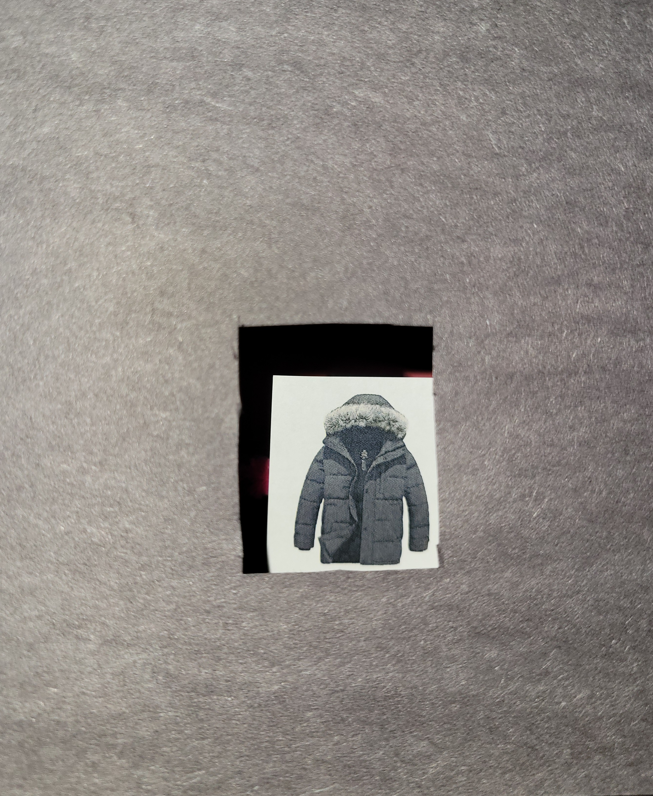
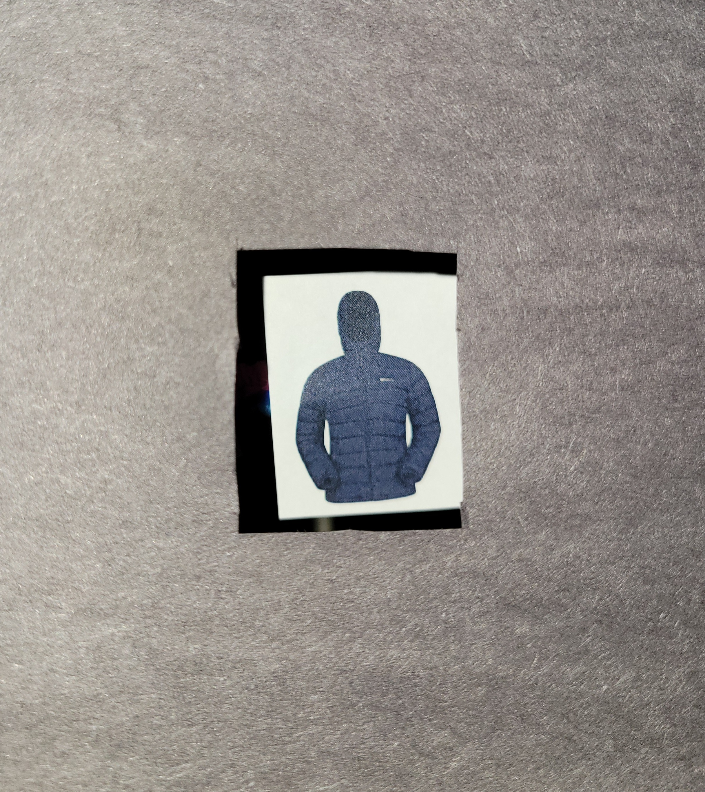
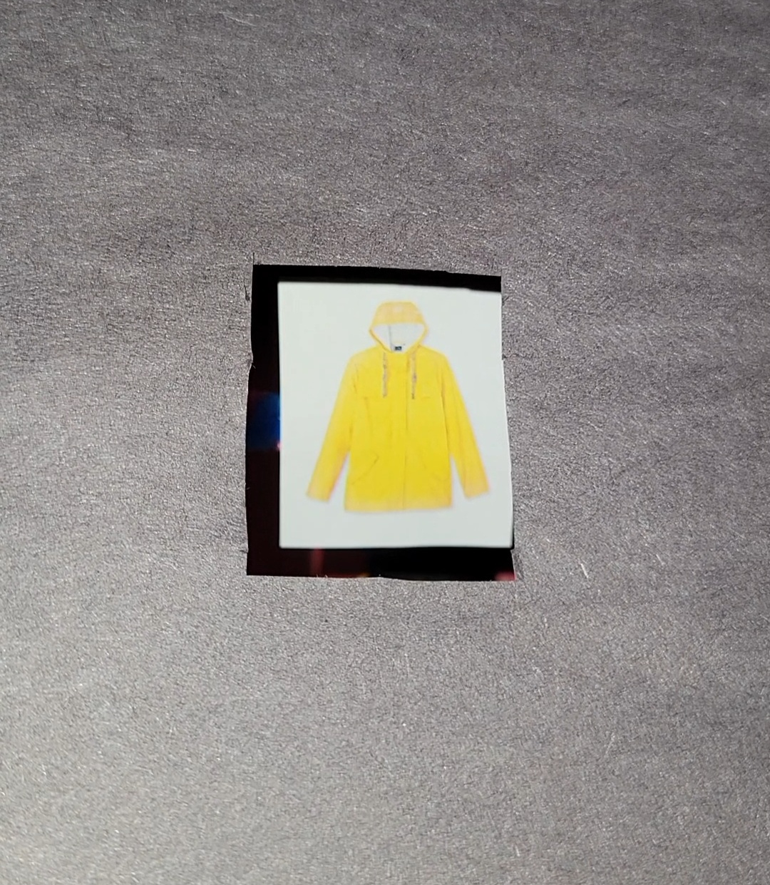
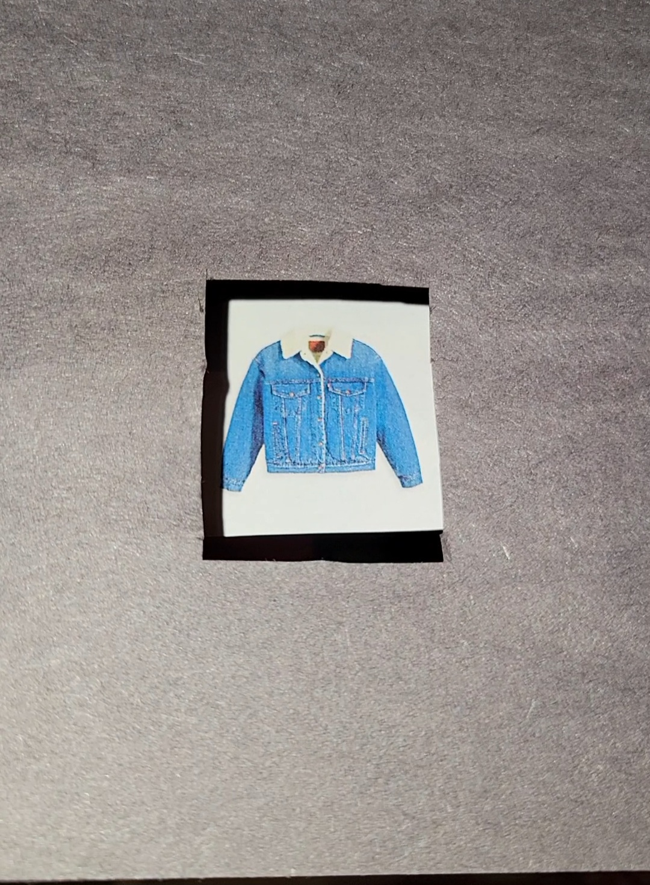
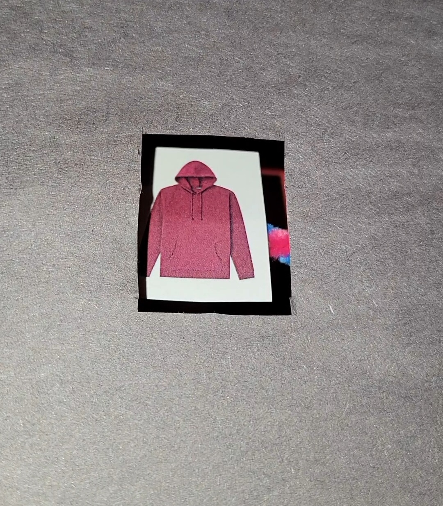
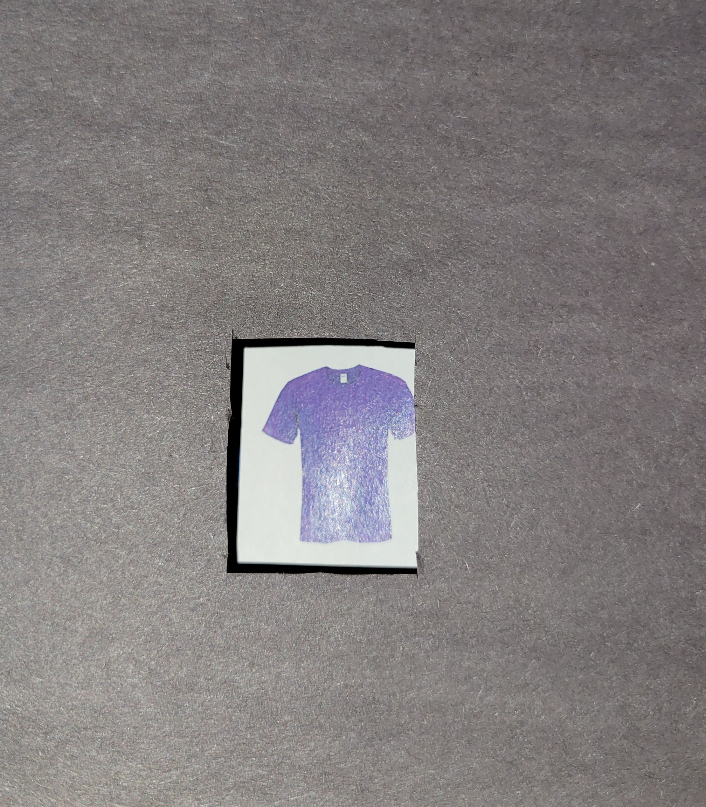
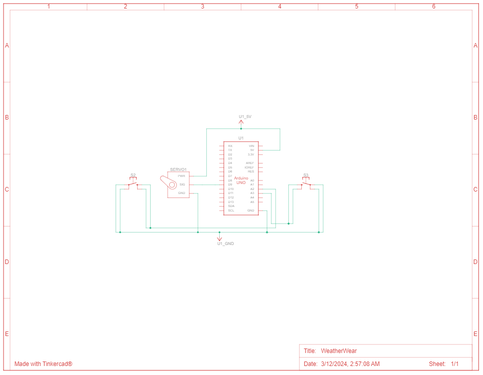

Concept
Going outdoors but not sure of the current weather condition or how to appropriately dress for it? No worries, WeatherWear got you covered! WeatherWear is a physical data visualization model, it displays real-time weather information and provides advice on how to appropriately dress for it.
This model can be used in individuals' daily life as most people check the weather before going outside. They usually check this data on their phone but WeatherWear is an interactive physical visualization that represents this data. With this physicalization, users can obtain information about the weather and a suggestion for the appropriate choice of clothing to wear without even looking at their phones! Hence, this physicalization informs the user about various different aspects than a digital weather application.
Functionality
WeatherWear displays the weather data using clothing items. This model informs the user of what to wear if going outdoors. It extracts data from a weather-focused website and displays real-time weather information.
For instance, if the current temperature is 2ºC outside, WeatherWear visualizes this information by displaying a winter jacket. This means that it's relatively cold outside at the moment and the user should put on a winter jacket to properly protect themselves from the cold, if they were to go outside. Another example, if it is 25ºC outside, then WeatherWear displays a T-Shirt. This means that the temperature is warm enough to wear a T-Shirt outdoors. If it is raining, WeatherWear will display a rain jacket.
Hence, WeatherWear represents weather data through the appropriate clothing item to wear for that weather condition.
An additional feature (creative surprise) of WeatherWear: this model can also display the weather information for the next few hours as well! So, no more contemplating if you should take your rain jacket with you when going outside, WeatherWear will inform you if you need it in the coming hours! This functionality is accessible via pressing the associated push buttons. By pressing the right push button, the user can look ahead on how the weather changes in the upcoming hours and by pressing the left push button, the user can decrement back to the current hour.
This project uses Python and C++. The python file extracts data on a real-time basis using the beautifulSoup4 and requests modules, performs a classification and sends the data to the port connected to the Arduino using the Serial module. The Arduino code reads in this data and displays the appropriate clothing image using a servo motor.
The images below showcase the final artifact:
Each of the following clothing items are displayed according to the weather condition at which they should be worn.
     Concept Development
The following images display the concept development that took place for this project.


Demo Video
Note: The data stream is slow moving as temperatures usually do not change drastically within a few minutes, thus a demo version of the project code was developed to show all the different states the physicalization can display at any moment based on the current weather data.
Code
Click here for the code used in this project.
Circuit Schematic Diagram
References
- Learned how to acquire local time from Anon. Python get current time. Retrieved March 5, 2024 from https://www.programiz.com/python-programming/datetime/current-time
- Learned how to acquire data from a webpage from Anon. 2023. Scraping data from a real website | web scraping in Python. (July 2023). Retrieved March 5, 2024 from https://www.youtube.com/watch?v=8dTpNajxaH0&t=525s
- Retreived Winter Jacket image from https://www.amazon.ca/Mountain-Warehouse-Season-Resistant-Raincoat/dp/B01KB02MHM/ref=asc_df_B01KB02MHM/?tag=googleshopc0c-20&linkCode=df0&hvadid=293004296384&hvpos=&hvnetw=g&hvrand=568586149035404936 &hvpone=&hvptwo=&hvqmt=&hvdev=c&hvdvcmdl=&hvlocint=&hvlocphy=9001320&hvtargid=pla-333523780310&psc=1&mcid=7a193b240ab43a919d540a277da2af4a
- Retreived Jean Jacket image from https://www.levi.com/CA/en_CA/clothing/women/outerwear/90s-sherpa-trucker-jacket/p/A44350001
- Retreived Hoddie image from https://www.walmart.ca/en/ip/george-mens-fleece-hoodie-burgundy/6000206818196?skuId=6000207117118&offerId=6000207117118&cmpid=SEM_CA_31725_B9IQVTSVB1 &utm_id=SEM_CA_31725_B9IQVTSVB1&utm_medium=paid_search&utm_source=google &utm_campaign=always_on&gad_source=1&gclid=EAIaIQobChMIjPG37pLthAMV-8zCBB3sGAhUEAQYAiABEgLjfPD_BwE&gclsrc=aw.ds
- Retreived T-Shirt image from https://www.partycity.ca/en/pdp/purple-t-shirt-8445860p.8445860.html
- Retreived Rain Jacket image from https://www.walmart.ca/en/ip/george-womens-rain-jacket-yellow/6000198942637
- Retreived Heavy Winter Jacket image from https://www.amazon.com/Wantdo-Length-Jacket-Parka-Puffer/dp/B08BL4PWCK/ref=sr_1_18?crid=24A1RLA1EEX30&dib=eyJ2IjoiMSJ9.mzwVuhkoDEIJm20F9kWNAa13tVNZAOB8my3V4y62t_ Gm72VpDA3Y7Azv5AqnOOpIDKO9-VH1fX1vkR-FLDOZIgJWcf5AgcgCK7kTFo5mUlBmh8lDSiL7bzCqTvUNVAiTy5eeFJPpsAeQlT3RuJlqNNlc2J5K QYc4Chk-ehczCDC8isN21A9nQoJD6u87p-9PMJHjalsjsOPNts-dsRfzIHm_FFdcA9O5lk3ErQOJstBi9VBuBYJyLZnL4sq0NDDjfHyF7BrtfPodfmJBX8dofc0xXj5j_ KWs04zsmloarfE.ur0zd5KI7U85DXW-2FkEK4Wu5SNJUrx6qI2we5IQ94c&dib_tag=se&keywords=jacket%2Bfor%2Bheavy%2Bwinter %2Bwith%2Bfur&qid=1710196186&sprefix=jacket%2Bfor%2Bheavy%2Bwinter%2Bwith%2Bfur %2Caps%2C151&sr=8-18&th=1